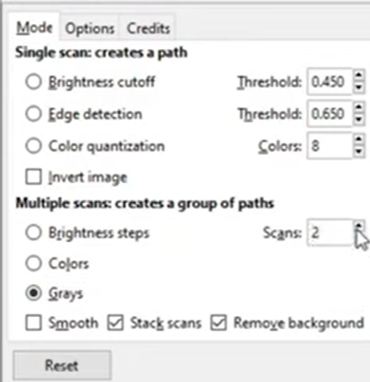
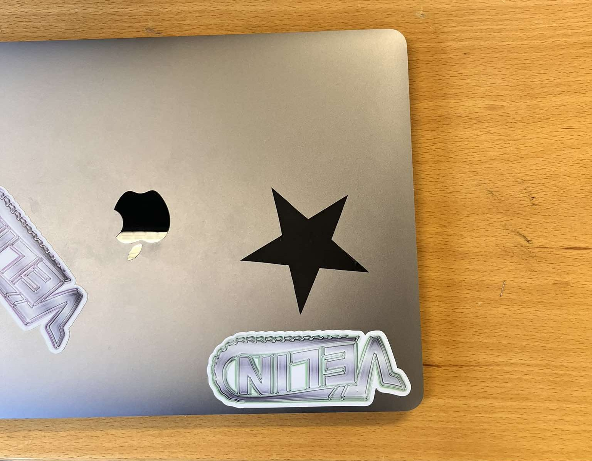
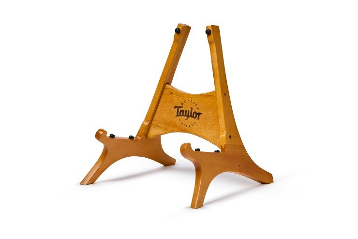
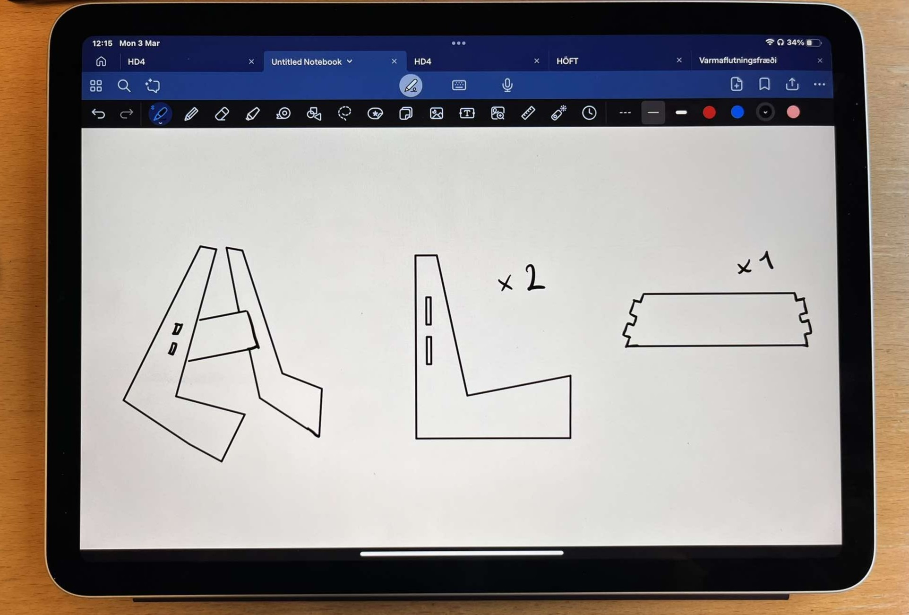
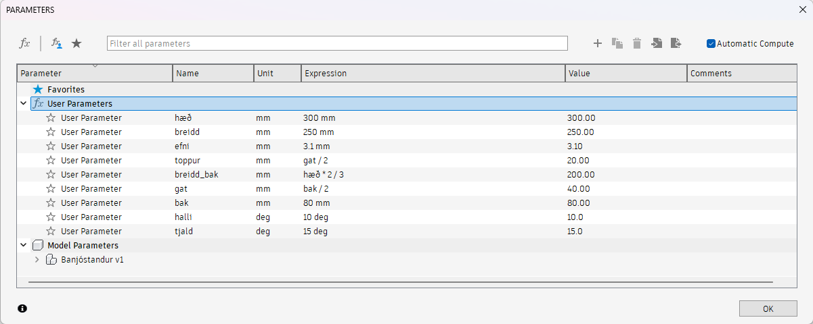
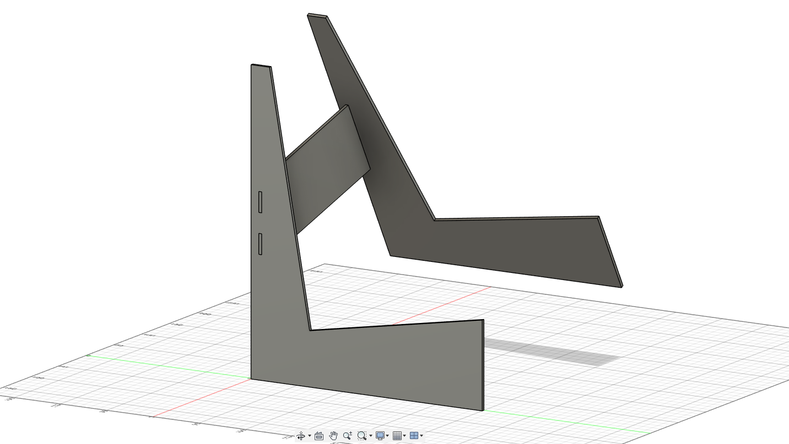
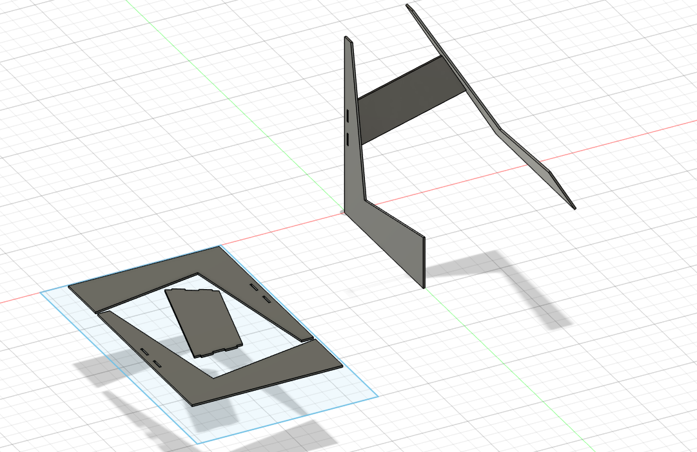
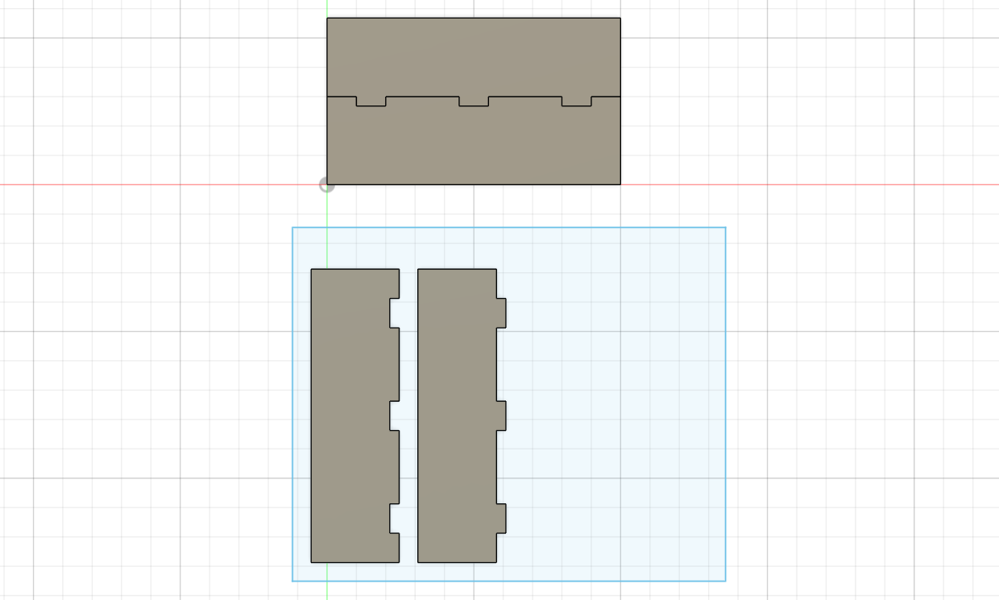
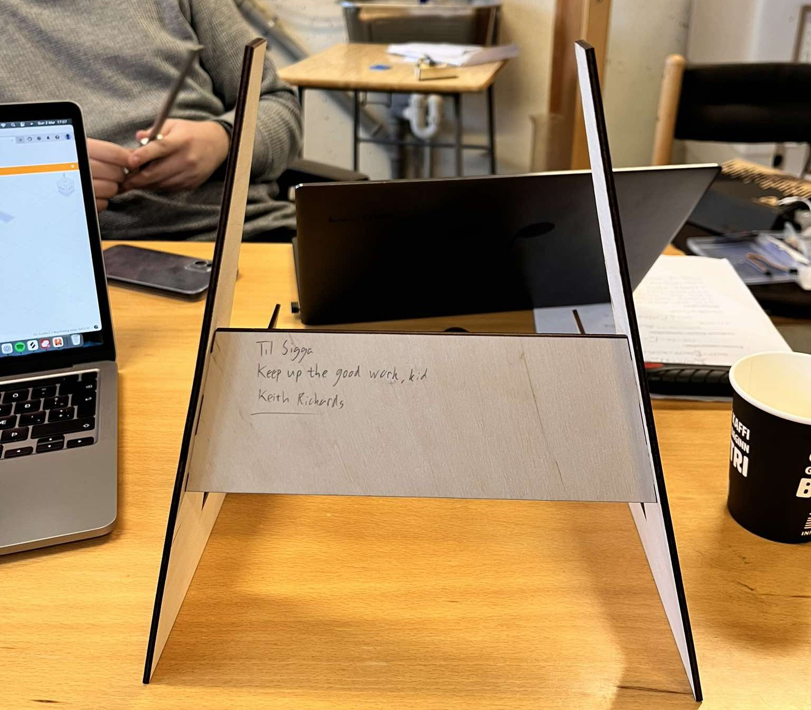
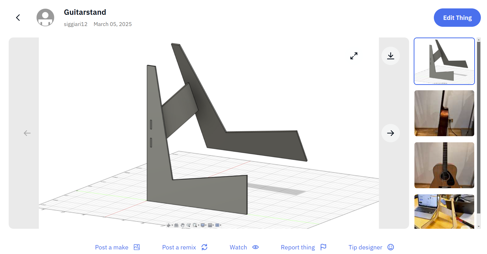

SAS
Verkefni 2
Parametrísk hönnun og tölvustuddur skurður.
Verkefnislýsing
Seinna verkefni námskeiðsins skiptist í tvo hluta. Í fyrri hlutanum áttum við að hanna límmiða að eigin vali með hámarksstæðina 100mmx50mm og nota vínylskera til að skera hann út.
Í seinni hlutanum unnum við að hönnun parametrísks, geirneglds módels af byggingareiningum. Módelið þurfti að vera skalanlegt á mismunandi vegu – bæði í lengd, breidd og efnisþykkt – og útfært með hentugum parametrískum hugbúnaði að eigin vali. Auk þess þurfti hönnunin að innihalda að minnsta kosti þrjá geirneglda festipunkta.
Hluti verkefnisins fól einnig í sér val á geislaskera og ákvörðun á kerf gildinu fyrir viðkomandi skera, sem var gert með prófunum.
Vinylskurður
Fyrst hlóð ég niður forritinu Inkscape samkvæmt leiðbeiningunum. Ég ákvað að eyða ekki of miklum tíma í hönnun límmiðans og gerði einfalda svarta stjörnu þar sem ég var orðinn spenntur að hefjast handa við geislaskurðinn.

Ég fann mynd á netinu í JPG-formi og hlóð henni inn í Inkscape með „Import“. Til að fjarlægja bakgrunninn fór ég í Path → Trace Bitmap, sem opnaði stillingaglugga. Þar valdi ég fyrst „Live Preview“, óvirkjaði „Smooth“ og virkjaði „Remove Background“. Þar sem myndin mín var svört með hvítum bakgrunni, var nóg að velja, undir „Multiple Scans“, „Grays“ og stilla „Scans“ á 2, þar sem ég var aðeins með tvo liti. Að lokum smellti ég á „OK“. Við þetta bættist ný útgáfa af myndinni ofan á þá gömlu, núna án bakgrunns.
Til að undirbúa myndina fyrir prentun fylgdi ég kennslumyndbandi frá Hafliða, sem leiddi mig ítarlega í gegnum nauðsynleg skref. Að því loknu vistaði ég myndina á skjáborðið, opnaði hana í Google Chrome og valdi Print. Stjarnan var þá skorin út og liggur nú þægilega ofan á tölvunni minni.
Geislaskurður
Ég hafði lagt mikla hugsun í hvað mig langaði að hanna með geislaskurðinum. Þar sem ég nefndi í Verkefni 1 að ég vildi hanna eitthvað tengt mínum áhugamálum sem gæti nýst mér, stóð ég við það og ákvað að hanna gítarstand.
Eins og hver annar hönnuður í dag fór ég beint á internetið til að finna innblástur fyrir hönnunina mína. Eftir hóflega langa leit fann ég standinn sem ég ætlaði að líkja minni hönnun eftir.
Ég komst fljótt að því að ég þyrfti að einfalda hönnunina af tveimur gildum ástæðum. Í fyrsta lagi vildi ég ekki flækja parametrana of mikið, þar sem einfaldari hönnun myndi auðvelda bæði útfærslu og stillingar. Í öðru lagi var efnið, sem ég hafði til umráða, um 3–3,2 mm á þykkt og þar af leiðandi þyrfti standurinn að innihalda meira efni til að tryggja nægjanlegan styrk til að geta borið gítar.
Ég teiknaði upp nokkrar útgáfur af standinum í pöddunni minni og leist best á þessa hér:
Þetta módel inniheldur 4 geirneglda punkta þar sem miðjuparturinn, sem ég kalla bakið, festist í fæturna tvo með tveimur pressfit festingum í hvorn fót.
Hönnun og teikning í Fusion 360
Loks hófst ég handa við að teikna upp gítarstandinn í tölvunni. Ég ákvað að nota Fusion 360 svo að ég gæti nýtt mér myndböndin sem voru gefin í verkefnislýsingunni og byggja öll á því. Það tók mig dágóðan tíma að átta mig á því hvernig ég ætti að ná að láta hann halla svona eins og tjald en að lokum fann ég út úr því með offset plane eiginleikanum þar sem ég teiknaði hvern part fyrir sig í mismunandi plönum undir ólíkum gráðum.
Eins og nefnt var í Verkefnislýsingunni þurfti hönnunin að vera útfærð parametríkst og vera skalanleg á mismunandi máta. Fyrsta skrefið var að skilgreina parametrana. Ég vildi geta skalað standinn eftir hæð, breidd og efnisþykkt. Þetta reyndist ekki auðvelt verkefni, en eftir nokkrar tilraunir af teikningum tókst mér að finna út hvernig ég gæti skalað hlutina rétt án þess að hlutirnir færu í rugl þegar þeim var parametrunum var breytt. Hér að neðan eru parametrarnir sem ég valdi:
 Þegar ég hafði teiknað upp standinn leit hann svona út:  Hér að neðan má svo sjá þrjár útgáfur þar sem ég breytti hæð (400mm), breidd (300mm) og efnisþykkt (5mm):Næsta skref var að undirbúa standinn fyrir geislaskurð. Ég ákvað að nota birkikrossvið sem efni í standinn og fengum við 3mmx300mmx500mm af efni til að vinna með. Ég byrjaði á því að búa til Components úr pörtunum mínum með því að velja hvern part fyrir sig, fara í Assemble og velja New Component. Svo bjó til flöt sem var 500mmx300mm. Næst fór ég í Modify → Arrange, valdi nýju Component-ana mína og fór svo í Envelope og valdi flötinn. Standurinn passaði þægilega inn í þann ramma og leit hann svona út:
Kerf prófun
Þegar geislinn sker í gegn um efnið brennir hann í burtu hluta efnissins. Til að geislaskerinn geri ráð fyrir þessu þarf að finna kerf geislans, það er í raun svæðið sem hann sker af efninu, sem Fusion gerir svo ráð fyrir í útskurðinum. Til að framkvæma kerf prófið ráðfærði ég mig við samnemanda minn hann Ólaf Finsen sem var nýbúinn að framkvæma slíkt próf. Ég teiknaði testið í Fusion, exportaði því í Inkscape og þaðan bjó ég til svg skrá úr teikningunni. Skráin var færð yfir á USB kubb sem var svo settur í tölvuna sem tengdist geislaskeranum. Þegar búið var að skera úr testið voru mælingar á því framkvæmdar með skífumáli og eftirfarandi niðurstöður fengust:
- Lengd bils sem skorði var út: L' = 80,6mm
- Lengd kubba eftir skurð: L = 78,3mm
- Fjöldi bila: n = 9
- Þvermál geisla: (L'-L)/n = 0.26mm
Geislaskurður
Næsta skref var að búa til DXF skránna fyrir standinn í Fusion. Ég byrjaði á því að finna leiserinn í Fusion, breyta kerf-inu í það kerf sem ég fékk í prófuninni og vista hann sem í Library. Næst fór ég í Manufacture og bjó til nýtt Setup. Þá opnaðist nýr gluggi, undir Model smellti ég á Select og valdi þar alla partana sem ég var búinn að leggja niður í planið mitt og valdi svo á OK. Svo fór ég í Cutting → 2D Model og þá opnaðist gluggi. Í honum fór ég í Linking og óvirkjaði ,,Lead-In'' og ,,Lead-Out'' svo fór ég í Geometry og valdi þar face-in á pörtunum mínum. Að lokum fór ég í Tool og valdi þar geislaskerann sem ég var búinn að vista.
Næsta skref var að setja 2D prófílinn í Post Process til að fá DXF skránna. Ég fékk sendan Post Processor frá Ólafi Finsen sem hann hafði fundið á netinu. Ég hlóð honum inn í Fusion, hakaði við ,,Only Cutting'' og vistaði hann svo. Þegar ég var kominn með DXF skránna gat ég opnað hana í Inkscape og undirbúið módelið fyrir skurðinn.
Áður en ég fór í að skera út standinn prófaði ég að skera út lítinn hlut með pressfit festingum til að ganga úr skugga um að kerf-ið væri ekki alveg örugglega rétt hjá mér. Það kom í ljós að hluturinn passaði ekki, þ.e. of langt bil var á milli tannanna. Þá prófaði ég að hækka kerf-ið og að lokum fékk ég hlutina til að passa saman með 0.43mm kerf.
Eftir að standurinn hafði verið skorinn út og settur saman hitti ég Kieth Richards í kaffistofunni í VR3 og hann áritaði standinn fyrir mig.
Hér að neðan er svo nokkrar myndir, meðal annars af standinum í notkun.
Að lokum bjó ég til aðgang á Thingiverse og birti standinn minn þar ásamt Fusion skránni minni, hann er hægt að nálgast hér.
